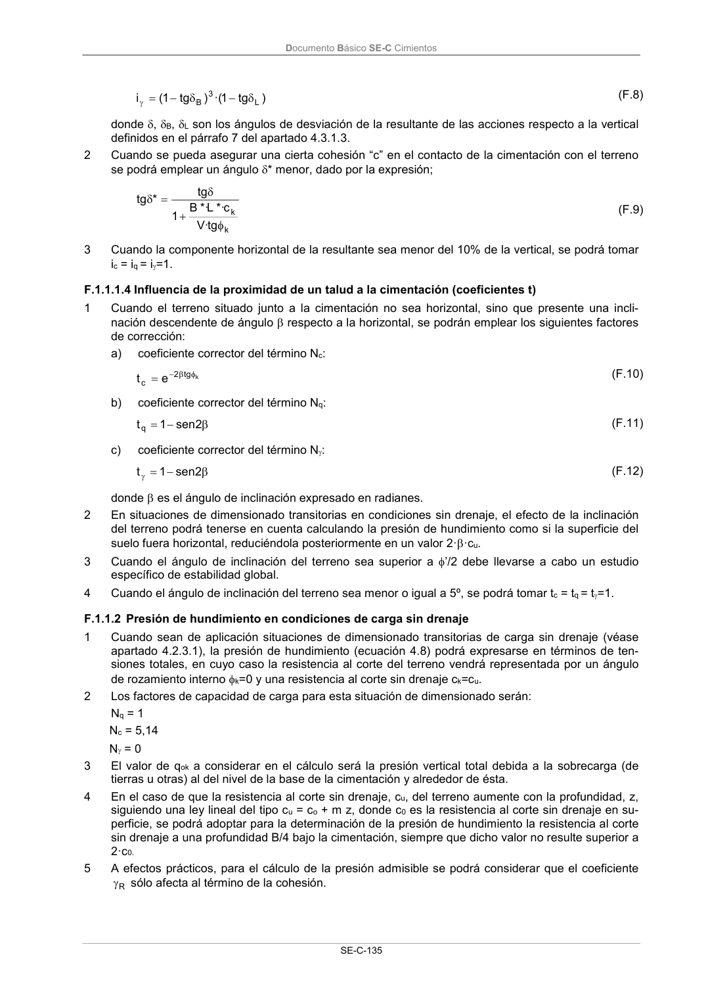

DB-SE-C Cimientos · edición 2019-12-20 · capa oficial
Documento DB-SE-C-oficial · SHA-256 del PDF a71133f4b0dca253e45ea3071c70f2a512354bcc5cd841bf89b1a502f567ac5e
Página física 140 de 165.
Copia fiel del PDF fuente · Fuente oficial
Ficha de la disposición en la fuente oficial
Formato: Texto de la página (Markdown)
Documento Básico SE-C Cimientos SE-C-135 ) tg 1 ·( ) tg 1 ( i L 3 B (F.8) donde , B, L son los ángulos de desviación de la resultante de las acciones respecto a la vertical definidos en el párrafo 7 del apartado 4.3.1.3. 2 Cuando se pueda asegurar una cierta cohesión “c” en el contacto de la cimentación con el terreno se podrá emplear un ángulo * menor, dado por la expresión; k k tg · V c *· L *· B 1 tg * tg (F.9) 3 Cuando la componente horizontal de la resultante sea menor del 10% de la vertical, se podrá tomar ic = iq = i=1. F.1.1.1.4 Influencia de la proximidad de un talud a la cimentación (coeficientes t) 1 Cuando el terreno situado junto a la cimentación no sea horizontal, sino que presente una incli- nación descendente de ángulo respecto a la horizontal, se podrán emplear los siguientes factores de corrección: a) coeficiente corrector del término Nc: k tg 2 c e t (F.10) b) coeficiente corrector del término Nq: 2 sen 1 t q (F.11) c) coeficiente corrector del término N: 2 sen 1 t (F.12) donde es el ángulo de inclinación expresado en radianes. 2 En situaciones de dimensionado transitorias en condiciones sin drenaje, el efecto de la inclinación del terreno podrá tenerse en cuenta calculando la presión de hundimiento como si la superficie del suelo fuera horizontal, reduciéndola posteriormente en un valor 2··cu. 3 Cuando el ángulo de inclinación del terreno sea superior a ’/2 debe llevarse a cabo un estudio específico de estabilidad global. 4 Cuando el ángulo de inclinación del terreno sea menor o igual a 5º, se podrá tomar tc = tq = t=1. F.1.1.2 Presión de hundimiento en condiciones de carga sin drenaje 1 Cuando sean de aplicación situaciones de dimensionado transitorias de carga sin drenaje (véase apartado 4.2.3.1), la presión de hundimiento (ecuación 4.8) podrá expresarse en términos de ten- siones totales, en cuyo caso la resistencia al corte del terreno vendrá representada por un ángulo de rozamiento interno k=0 y una resistencia al corte sin drenaje ck=cu. 2 Los factores de capacidad de carga para esta situación de dimensionado serán: Nq = 1 Nc = 5,14 N = 0 3 El valor de qok a considerar en el cálculo será la presión vertical total debida a la sobrecarga (de tierras u otras) al del nivel de la base de la cimentación y alrededor de ésta. 4 En el caso de que la resistencia al corte sin drenaje, cu, del terreno aumente con la profundidad, z, siguiendo una ley lineal del tipo cu = co + m z, donde c0 es la resistencia al corte sin drenaje en su- perficie, se podrá adoptar para la determinación de la presión de hundimiento la resistencia al corte sin drenaje a una profundidad B/4 bajo la cimentación, siempre que dicho valor no resulte superior a 2·c0. 5 A efectos prácticos, para el cálculo de la presión admisible se podrá considerar que el coeficiente R sólo afecta al término de la cohesión.
